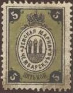
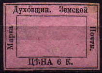

Return To Catalogue - Zemstvos Overview - Russia
Note: on my website many of the
pictures can not be seen! They are of course present in the
catalogue;
contact me if you want to purchase it.

5 k green and black (imperforated, 1874) 5 k green and black (perforated, 1884) (-) black, blue, green and yellow (different type, 1888)

Unissued stamp for Chembar? No value inscription, different
design.

2 k black on lilac
(Sorry, no picture available yet)
2 k black on lilac


1 k brown (1895) 1 k orange (1897) 2 k red 2 k red on lilac 2 k blue (1891) 2 k green (1892) 2 k grey (1893) 2 k yellow (1894) 2 k violet (1895) 2 k lilac (1895) 3 k blue (1895) 3 k green (1895, different size) 3 k lilac (1897) 10 k red (1895) Surcharged (1902) '2' on 3 k green '2' on 10 k red

2 k blue
(Reduced sizes)
2 k red (deer facing the right) 2 k red (deer facing the left) 4 k brown
2 k blue

10 k green 20 k green

3 k blue (2 types)

3 k green (2 types)

3 k green 3 k red

5 k black on blue

3 k black 3 k blue
Forgeries: I know that a bogus(?) value of 3 k red has been made by a forger from Hialeah Florida; large numbers of these forgeries are offered on Ebay (even blocks). General remarks about these forgeries: the forger has probably used a computer scanner and printer, the details are mostly lost in most of his forgeries, the paper is modern and the size does in general not correspond to genuine stamps.
2 k green, lilac and black

2 k brown
(Reduced size)
3 k black and green (3 types)
In the first type the text is written circular, in the second and third type it is written straight. The third type has wider arms and numerals.
3 k black and green 3 k black, blue and green (1898) 3 k black, red and green (1899)
3 k green (1904) 3 k red (1910) 3 k violet (1914) 3 k blue (1916)

Reduced size
3 k black on blue

(I've been told that this is an official reprint)
(Reduced size)
3 k black
(Dimitriev District rural government seal; information obtained
thanks to Robert Scott)
(Reduce size)
3 k red and blue
3 k brown, green and red

5 k black (3 types)
A forgery based on an illustration of the Moens catalogue exists of the rare 1866 stamp which was made by a teacher in Odessa. Source: http://ufdc.ufl.edu/UF00020235/00035/16j.

Forgery, when compared to the genuine stamp, the upper left
"3" is different, the letter "MAP" are
connected, the bottom right "3" has a smaller lower
part and the inner framelines just above this letter have a large
dot connecting them.
5 k black, orange and blue (imperforated or perforated) 5 k black, red and blue (perforated)


5 k red, brown and blue 5 k red and green (1899)
(Reduced sizes)


1/2 k brown (1879) 5 k blue (1879)

(Reduced sizes)
3 k black on blue 3 k black on blue (inner wavy line) 6 k black on lilac 6 k black on lilac (inner wavy line)

{kind=link}
{kind=link}
{kind=link}